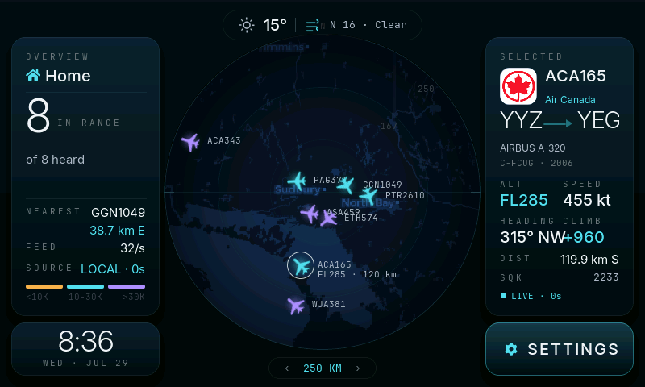

Mockups for review. Nothing here is implemented. Geometry and colour are taken
verbatim from UI_UX_REVIEW.md §5.3 and §6.4, so what you approve is what gets built.
Panel frames are true 800×480. “Before” is a real framebuffer capture pulled off the device
this morning, not a redrawing.
The thesis: the disc is the product; everything else is a bezel. Chrome loses area and luminance; the scope gains 17%. Chrome-to-disc ratio flips from 1.26 : 1 to 0.82 : 1 without needing translucency, because the cards no longer overlap the circle.

SETTINGS slab is the brightest object on a radar display. Cards 151,616 px vs disc 120,687 px.
Disc 141,196 px (36.8%) · cards 116,256 px (30.3%) · ratio 0.82 : 1.
| Severity | Fix | Detail |
|---|---|---|
| critical | Unknown altitude ≠ emergency | altColorRGB’s else branch returns 0xff6472 — byte-identical to
C_RED. An aircraft with no altitude currently looks exactly like a 7700 squawk.
Unknown becomes C_IVORY2; emergency keeps a 2 px C_RED ring plus an
#ff8a94 glyph. |
| critical | Value cell overflow | 315° NW+960 is an 82.6 px string in a 78 px cell. HDG and V/S split into two
63 px columns; every value is now ≤5 tabular glyphs. |
| critical | Compass ghost | The N is drawn on the screen root under the weather pill and survives as a
ghost glyph. It moves inside s_clip (LV_ALIGN_TOP_MID, 0, 15) and the
pill moves to (12, 8), so occlusion is structurally impossible. |
| critical | Legibility | Scope callsigns subtend 8.0′ at 650 mm against a 16′ ISO 9241-303 floor — a 96 PPI mock shipped 1:1 onto a 133 PPI panel. Values go to 22 px (16.0′), scope labels 11→15 px. |
| high | Count contradiction | “11 IN RANGE / of 8 heard” compares a 60 s coast window against a single poll. Replaced by
an explicit 2 COASTING row that collapses when zero. |
| high | Two measured no-ops removed | Card shadows buy 1.009:1 contrast for a 3,362 B uncached buffer + two blur passes per card
per repaint. OPA_CARD 216 forces a full screen-root recomposite under every 1 Hz
label for a 1.057:1 difference. Both deleted — flat C_SURF at
LV_OPA_COVER gives a stronger 7.4× elevation step and restores the
LV_COVER_RES_COVER fast path. |
| high | Altitude ramp readable without the legend | Luminance now descends monotonically (0.599 → 0.491 → 0.321) and glyph size shrinks with altitude, so low = near = loud. Cyan is freed to mean “live” only. The 342-ink-unit legend at 1.9:1 contrast is deleted. |
Reviewed separately and scored 1/10 on live state. The device already serves
/metrics, /api/state and a live /screen.bmp; the page
renders one value from all of it — the version string. This is ~2 KB of HTML, not firmware work.
Shown at 1240 px, scaled to fit.
64.7% of the viewport unused · 1,752 px tall · zero live values.
Status above the fold from /metrics at 10 s (not 5 s — the web
server shares loop() with LVGL). Panel mirror is manual-refresh only.
| high | Wi-Fi password wipe | handleWifi writes server.arg("pass") unconditionally while the
field renders empty by design. “Fix a typo in the SSID → Save & reboot” erases the stored
password and reboots into a device that can’t rejoin. Above, the field is labelled
blank = keep — but the real fix is 3 lines of firmware. |
| med-high | CSRF guard bypass | o.indexOf(hostHdr) < 0 is a substring test, so
http://airradar.local.evil.com passes against airradar.local.
Compare against "http://" + hostHdr exactly. |
Approve, amend, or reject any row. Phase 1 of the plan is ~120 lines of pure constant and predicate edits — it closes every critical finding above and frees render headroom rather than spending it.